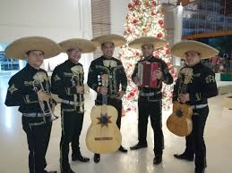

El Mariachi es uno de los géneros musicales más representativos de México. Este estilo musical surgió en el estado de Jalisco durante el siglo XIX.
El mariachi es conocido por su música alegre y sus trajes tradicionales llamados trajes de charro. Este género es muy común en celebraciones como fiestas, bodas y festivales.
Los grupos de mariachi están formados por varios músicos que tocan instrumentos tradicionales como violines, trompetas, guitarras, vihuela y guitarrón.
Las canciones de mariachi suelen hablar de amor, tradiciones, fiestas y la vida cotidiana del pueblo mexicano.
Uno de los artistas más famosos del mariachi fue Vicente Fernández, quien ayudó a popularizar este género en todo el mundo.
